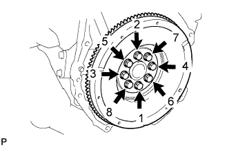
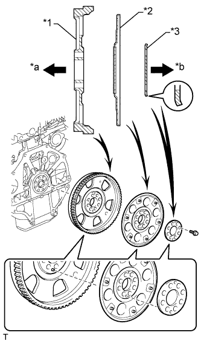
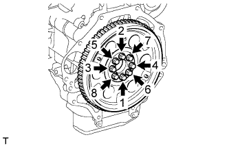
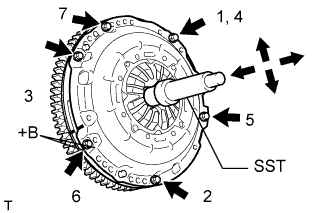
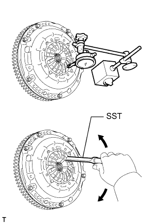

ЗАДНИЙ САЛЬНИК КОЛЕНЧАТОГО ВАЛА > УСТАНОВКА |
| 1. УСТАНОВИТЕ ЗАДНИЙ САЛЬНИК КОЛЕНЧАТОГО ВАЛА |
Нанесите универсальную консистентную смазку на кромку нового заднего сальника коленчатого вала.
С помощью SST и молотка запрессуйте новый сальник так, чтобы его поверхность была заподлицо с краем стопора заднего сальника.
| 2. УСТАНОВИТЕ МАХОВИК В СБОРЕ (для моделей с механической трансмиссией) |
Очистите болты и болтовые отверстия.
Нанесите герметик-фиксатор на 2-3 витка резьбы на конце каждого болта.
 |
Удерживайте шкив коленчатого вала с помощью SST.
Установите маховик на коленчатый вал.
|  |
Установите и равномерно затяните 8 болтов в последовательности, показанной на рисунке.
| 3. УСТАНОВИТЕ ВЕДУЩИЙ ДИСК КРЫЛЬЧАТКИ НАСОСА (для моделей с автоматической трансмиссией) |
|
Удерживайте шкив коленчатого вала с помощью SST.
|  |
Установите маховик с коронной шестерней, ведущий диск крыльчатки насоса и заднюю распорную втулку ведущего диска на коленчатый вал.
| *1 | Маховик и коронная шестерня |
| *2 | Ведущий диск крыльчатки насоса |
| *3 | Задняя распорная втулка ведущего диска |
| *a | Сторона двигателя |
| *b | Сторона трансмиссии |
|  |
В несколько этапов вверните и равномерно затяните 8 болтов. Последовательность затяжки показана на рисунке.
| 4. УСТАНОВИТЕ ВЕДОМЫЙ ДИСК СЦЕПЛЕНИЯ В СБОРЕ (для моделей с механической трансмиссией) |
 |
Вставьте SST в ведомый диск сцепления. Затем вставьте SST (вместе с ведомым диском сцепления) в маховик, чтобы установить ведомый диск сцепления.
 | Со стороны маховика |
| 5. УСТАНОВИТЕ КОЖУХ СЦЕПЛЕНИЯ В СБОРЕ (для моделей с механической трансмиссией) |
|  |
Совместите сборочные метки кожуха сцепления и маховика.
| *a | Метка |
Равномерно затяните 6 болтов в последовательности, показанной на рисунке, начиная с болта, который расположен сверху около штифта.
| 6. ПРОВЕРЬТЕ И ОТРЕГУЛИРУЙТЕ КОЖУХ СЦЕПЛЕНИЯ В СБОРЕ (для моделей с механической трансмиссией) |
|  |
С помощью индикатора часового типа с роликовым датчиком измерьте отклонение конца диафрагменной пружины.
| 7. УСТАНОВИТЕ МЕХАНИЧЕСКУЮ ТРАНСМИССИЮ В СБОРЕ (для моделей с механической трансмиссией) |
Установите механическую трансмиссию (Нажмите здесь).
| 8. УСТАНОВИТЕ АВТОМАТИЧЕСКУЮ ТРАНСМИССИЮ В СБОРЕ (для моделей с автоматической трансмиссией) |
Установите автоматическую трансмиссию (Нажмите здесь).